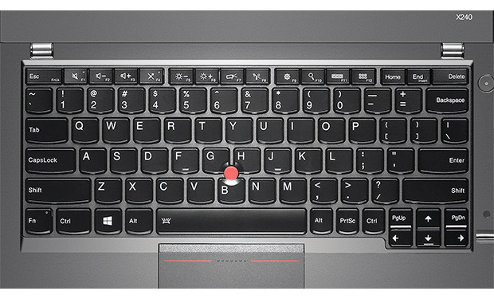

I’m using a Lenovo X201 with 8GiB of RAM. Apart from some minor issues, I’ve been very satisfied with this laptop. It’s over four years old, and so I decided to see what’s available on the horizon. I did not buy an X240 because of the following reasons:
The X240 has only one slot for RAM and thus supports a maximum of 8GiB.
I think it’s pretty ridiculous for any successor to the X230 to support less RAM. In and of itself this is a deal breaker! My X201 has 8GiB, and I wish it had more! It doesn’t make sense to settle for less on new kit. In other words, Lenovo is stating that 8GiB ought to be enough for anybody.
The X240 keyboard is missing buttons.
The X201 keyboard has PageUp and PageDown keys in addition to the Forward and Back buttons which are located above the Left and Right arrow keys. It also has dedicated Insert and Delete keys. This is all to be expected, and is awesome.
The X240 removes the dedicated Forward and Back buttons, and replaces them with the (now relocated) PageUp and PageDown keys. To use the Forward and Back buttons, you now need an extra finger to hold the Fn button.
If that wasn’t bad enough, the Insert key now shares a button with the End key, which makes common Shift+Insert sequences near impossible to anyone that isn’t either a cephalopod or an Emacs user. Time to update the pedals to include an Fn key.
|  |
| The X240 keyboard is missing buttons. |
It’s also worth mentioning that the dedicated volume controls are gone.
The X240 “Trackpad”/“Touchpad” is now buttonless and unusable.
The mechanics of the new Touchpad makes it unusable! It has no buttons, and instead it feels like it is travelling 1cm vertically when it is pressed! This throws off any fine positioning you had with your cursor. Try it for five minutes, and you’ll quickly learn that this alone ensures that this machine can only be used as a desktop. Many, many users are complaining about the feel of the new pad. This feels like an attempt to imitate the look of an Apple product, instead of trying to maintain the functionality of the X series, except that the hardware isn’t very good.
Interlude…
I could deal with the below issues, if my top three (above) issues weren’t strong deal breakers! They are all easy to fix too! I hope these are addressed so that I can post a follow up “rave” article. ;)
Other issues/differences…
The X240 has a new, incompatible power adapter.
Lenovo has decided it needs to squeeze more money out of users by introducing new, backwards-incompatible technology. To this end, the well-known barrel adapter is now gone, and it has been replaced by a strange rectangle. You might as well throw out all your old power bricks, as Lenovo has said they won’t offer a compatibility adapter. Apparently, they used to sell such an adapter, but it has been discontinued.
The X240 has a new, incompatible docking bay.
If you were a fan of docking, you’ll now have to purchase a new bay.
The X240 has a combined microphone/headphone jack.
Minimalist designs and the abundance of cheap phone headsets has reduced the dual jack design to a combined single jack. I don’t like the change, but I realize there’s not much that can be done to prevent it.
Lenovo has a terrible warranty program.
Getting a hardware replacement with the Lenovo “return to depot” service can take about two weeks. Bringing your laptop in to a service centre is equally challenging. The locator database is out of date, and once you do find a service centre, many are unwilling to accept your hardware because they’re backlogged with work! If you are lucky enough to get a part replaced, hope that it isn’t defective or DOA. I had to go through three rounds of bad motherboards graphics on my X201. The on-site service is a good option if you can afford it.
Conclusion
Instead of iterating and improving on the much-loved X series, Lenovo has decided to sacrifice its followers in trying to appeal to a low-end laptop market. Once the model of power and portability, the X series is now designed for users who are afraid of having too many buttons or too much RAM.
The X220 and X230 are not available for sale anymore. The X250 isn’t due before 2015. I’ve extended the warranty of my X201 to the maximum of five years. Let’s hope someone at Lenovo reads this article and can make a difference before it’s too late. I’m happy to consult and demo new hardware if you contact me. I’d genuinely like to help.
Happy Hacking,
James
You can hire James and his team at m9rx corporation.
You can follow James on Mastodon for more frequent updates and other random thoughts.
You can follow James on Twitter for more frequent updates and other random thoughts.
You can support James on GitHub if you'd like to help sustain this kind of content.
You can support James on Patreon if you'd like to help sustain this kind of content.
Your comment has been submitted and will be published if it gets approved.
Click here to see the patch you generated.
{kind=link}
Comments
Nothing yet.
Post a comment